Cách tắt trạng thái online trên Facebook & Messenger cực dễ

Ty Nguyen
CEO ❤️ AhaChat. Love babies & chatbot.
Khi sử dụng mạng xã hội Facebook, nhiều người dùng không muốn hiển thị Facebook và Facebook Messenger của họ đang hoạt động, hay đơn giản không muốn bạn bè biết họ đang online. Vậy làm thế nào để tắt trạng thái online trên facebook và facebook messenger để không ai biết nick của bạn đang hoạt động. Bài viết dưới đây hướng dẫn bạn cách tắt trạng thái online trên facebook, giúp bạn giải quyết được vấn đề đang thắc mắc, cùng theo dõi nhé!
1. Cách tắt trạng thái online Facebook trên điện thoại & máy tính
Để tắt trạng thái online trên Facebook, bất kỳ trên thiết bị nào, bạn cũng chỉ cần thao tác theo các bước sau:
(Bài viết này mình hướng dẫn bạn thực hiện trên điện thoại Iphone, các thiết bị khác bạn cũng áp dụng tương tự là được nhé)
Bước 1: Đầu tiên, bạn cần phải đăng nhập vào tài khoản Facebook của bạn. Tại giao diện trang chủ sau khi đăng nhập, bạn bấm chọn biểu tượng 3 gạch ngang ở góc phải phía dưới màn hình.
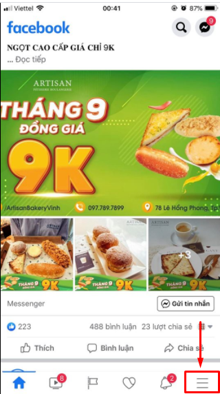
Bước 2: Tiếp đó, khi xuất hiện giao diện mới, bạn bấm chọn mục Cài đặt & quyền riêng tư rồi lại chọn mục Cài đặt.
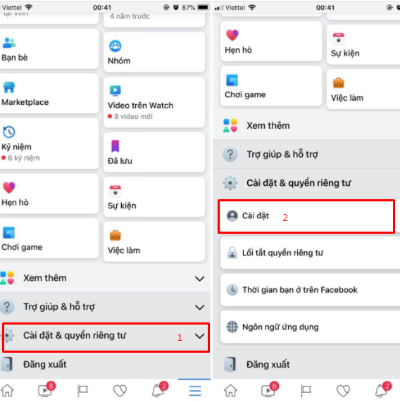
Bước 3: Tại giao diện mục Cài đặt, bạn kéo xuống dưới và bấm chọn vào mục Trạng thái hoạt động.
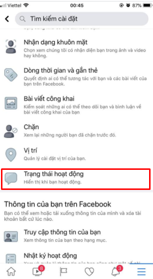
Bước 4: Tiếp đó, bạn tắt hiển thị trạng thái hoạt động, lúc này sẽ có thông báo xác minh lại lần nữa. Nếu bạn vẫn muốn tắt trạng thái online trên Facebook thì bấm nút Tắt.
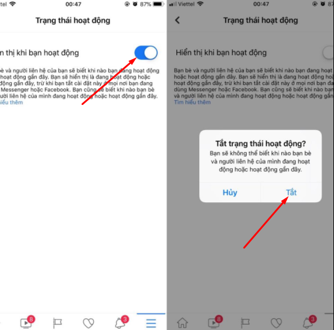
Chỉ với vài bước đơn giản như trên là bạn đã tắt trạng thái online trên Facebook thành công rồi nhé!
2. Cách tắt trạng thái online trên Facebook Messenger
a. Cách tắt trạng thái online trong cửa sổ chat Facebook trên máy tính
Các bước tắt trạng thái online trên Facebook Messenger trên máy tính cũng khá đơn giản, chỉ cần thao tác theo các bước sau:
Bước 1: Bạn cần truy cập vào website facebook.com để đăng nhập vào tài khoản Facebook thông qua trình duyệt web.
Bước 2: Sau khi đăng nhập, tại giao diện trang chủ, bạn bấm vào biểu tượng Messenger, xuất hiện cửa sổ mới, bạn bấm chọn biểu tượng dấu ba chấm như hình dưới.
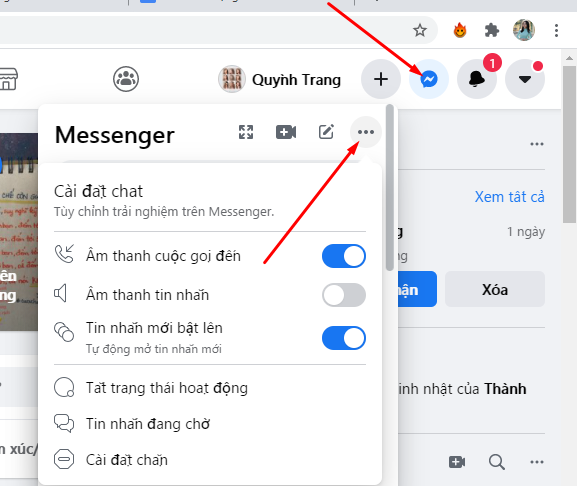
Bước 3: Tiếp đó, bạn bấm chọn vào mục Tắt trạng thái hoạt động.
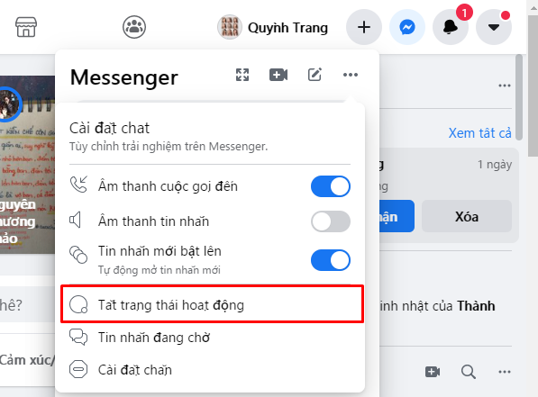
Bước 4: Sau khi bấm chọn vào mục Tắt trạng thái hoạt động, tại đây bạn có 3 lựa chọn để tắt trạng thái online trên Facebook, cụ thể như sau:
- Tắt trạng thái hoạt động của tất cả người liên hệ: nếu bạn muốn tắt trạng thái online với tất cả mọi người nằm trong danh sách bạn bè thì tích vào chỗ này.
- Tắt trạng thái hoạt động của tất cả người liên hệ ngoại trừ …: nếu bạn muốn hiển thị trạng thái online với một số nick khác thì tích chọn mục này.
- Chỉ tắt trạng hoạt động của một số người liên hệ…: nếu bạn chỉ muốn tắt trạng thái online với một số nick thì bạn tích chọn vào mục này.
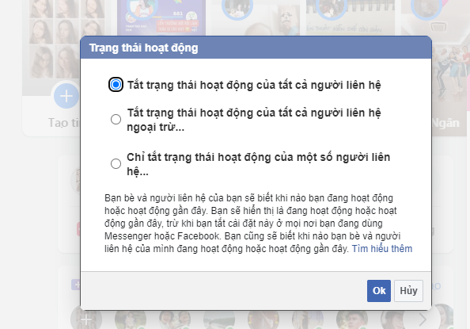
Khi đã tích chọn vào trạng thái bạn muốn, bấm chọn Ok. Như vậy là bạn đã tắt trạng thái online trên Facebook bằng máy tính thành công rồi nhé.
Sau khi bạn tắt trạng thái online Facebook, bạn bè trong danh sách bạn bè trên Facebook của bạn sẽ không thấy được nick bạn đang sáng đèn.
Trường hợp nếu bạn muốn mở lại, không muốn tắt trạng thái hoạt động khi online Facebook thì bạn hoàn tác trở lại như hình mình hướng dẫn dưới đây
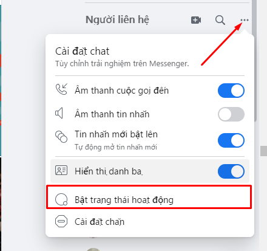
b. Cách tắt trạng thái online thông qua ứng dụng Messenger trên điện thoại
Các thao tác hướng dẫn tắt trạng thái online trên điện thoại thông qua ứng dụng Messenger cũng rất đơn giản và nhanh chóng. Cách thực hiện như sau:
Bước 1: Mở ứng dụng Messenger trên điện thoại của bạn, sau đó đăng nhập vào tài khoản Facebook trên ứng dụng Messenger.
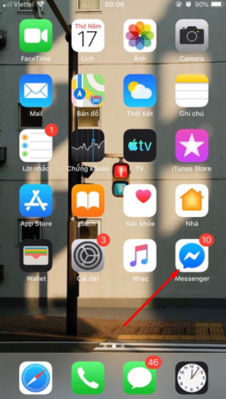
Bước 2: Tại giao diện ứng dụng Messenger sau khi đăng nhập vào, bạn bấm vào hình avatar của tài khoản ở góc trái phía trên màn hình.
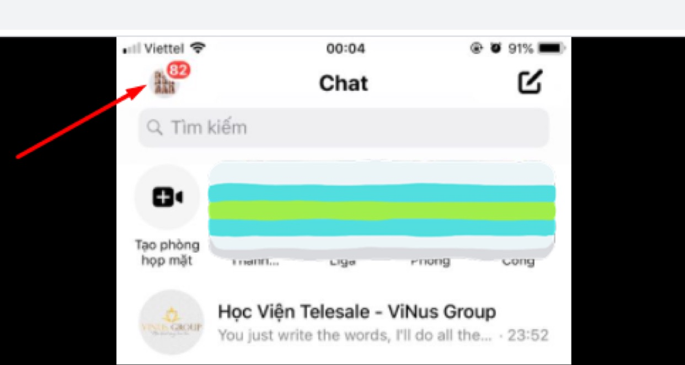
Bước 3: Tiếp đó, tại giao diện mới, bạn bấm chọn vào mục Trạng thái hoạt động.
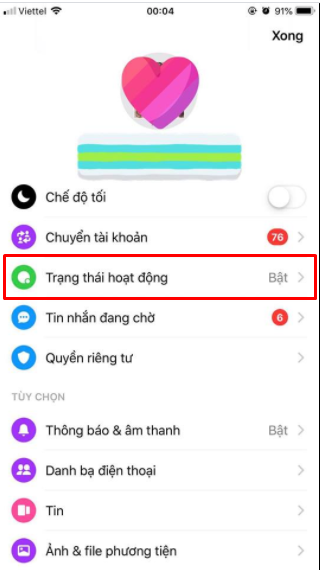
Bước 4: Sau khi bạn nhấp vào trạng thái hoạt động, giao diện mới xuất hiện, bạn gạt tắt Hiển thị khi bạn hoạt động như hình dưới:
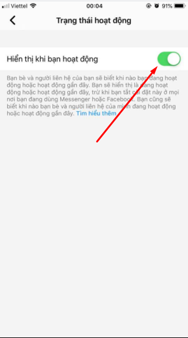
Sau khi gạt tắt sẽ có cửa sổ hỏi Tắt trạng thái hoạt động, nếu bạn muốn tắt thì nhấn Tắt như hình dưới.
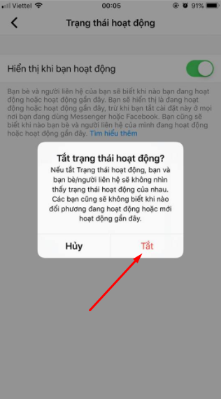
Như vậy là bạn đã tắt trạng thái online trên ứng dụng Messenger và Facebook chat thành công rồi nhé. Rất đơn giản phải không nào!
Bài viết trên đây đã hướng dẫn bạn cách tắt trạng thái online trên Facebook và cả Messenger Facebook chỉ với những bước đơn giản mà bất kỳ ai cũng thao tác làm theo được. Trong quá trình thực hiện, nếu bạn có bất kỳ thắc mắc nào thì đừng quên để lại câu hỏi dưới mục bình luận, chúng tôi sẽ phản hồi bạn trong thời gian sớm nhất. Hy vọng với những thông tin được chia sẻ trong bài hữu ích đối với bạn. Chúc bạn thực hiện thành công!